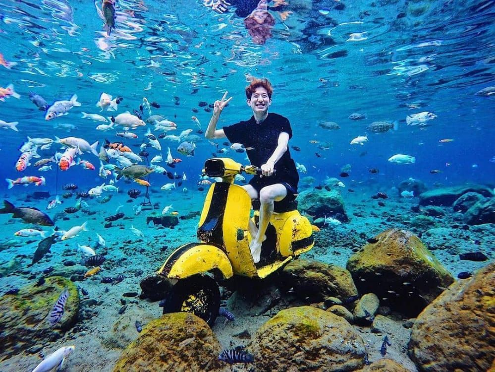

Umbul Ponggok merupakan wisata air yang terletak di desa Ponggok, Klaten, Jawa Tengah. Umbul Ponggok merupakan mata air yang dimanfaatkan menjadi objek wisata, pemandian dan selam permukaan. Mata air yang mengaliri wilayah Kabupaten Klaten, Kabupaten Sukoharjo, dan Kota Surakarta ini diinformasikan oleh Badan Agraria dan Tata Ruang/ Badan Pertanahan Nasional merupakan salah satu luaran resapan dari Sungai Kauman yang terbentang dari Gunung Merbabu hingga Kecamatan Jatinom
Desa Tegalmulyo, Kecamatan Kemalang, Kabupaten Klaten. Berada di paling ujung, desa ini memiliki keindahan panorama pegunungan. Jembatan gantung dan gondola yang menjadi akses warga Dusun Girpasang, yang terpisah karena tebing, menjadi daya tarik tersendiri. Pesona alam dengan spot anti mainstream yang disuguhkan objek wisata baru di Klaten satu ini rekomeneded untuk menemani perjalanan libur akhir pekan keluarga.
New Rivermoon merupakan sebuah destinasi wisata di Klaten yang sudah berdiri sejak 2 tahun yang lalu. Destinasi wisata yang berlokasi di pusat Kota Klaten lebih tepatnya Pusur, Karanglo, Kec. Polanharjo, Kabupaten Klaten, Jawa Tengah ini menyediakan layanan yang bisa Anda nikmati bersama keluarga ataupun teman, mulai dari outbound, camping, fun game dan yang tidak kalah serunya yaitu tubing di kali pusur.
Ekowisata Kalitalang hanya berjarak sekitar 4 kilometer dari puncak Gunung Merapi. Menjadikannya salah satu spot terbaik untuk melihat kegagahan Gunung Merapi, selain di Bukit Klangon, Sleman DI Yogyakarta yang keduanya mempunyai jarak berdekatan. Pengunjung bakal bisa melihat kawah puncak Merapi yang terlihat sangat jelas, terlebih ketika cuaca cerah akan menambah keindahan. Keistimewaan objek ini, bukan sekadar melihat puncak Merapi namun juga sekaligus bisa sarana edukasi melihat secara langsung morfologi puncak Merapi yang sering berubah setelah mengalami beberapa kali erupsi.